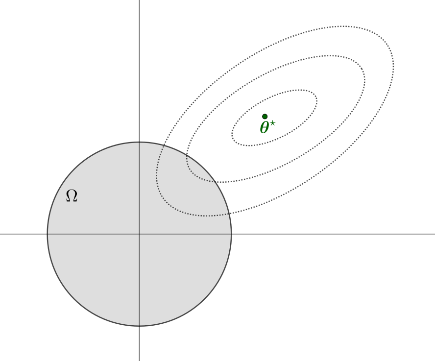
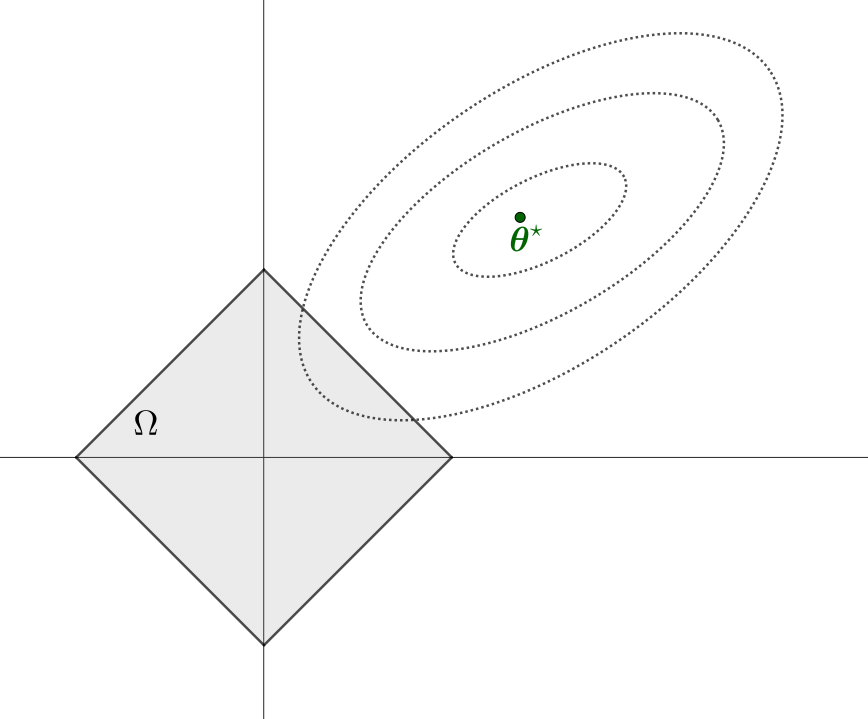

Una estrategia clásica para simplificar modelos y mejorar su interpretabilidad es la selección de variables, que consiste en identificar un subconjunto de predictores relevantes y descartar el resto. A pesar de que este enfoque puede conducir a modelos más simples, el hecho de ser un procedimiento discreto (en el que una determinada variable o bien es retenida o bien es eliminada) suele traducirse en alta varianza, ya que una pequeña perturbación en los datos podría conducir a un modelo totalmente diferente.
Por tal motivo, una alternativa más estable y continua son los métodos de regularización, que ajustan los parámetros del modelo mediante penalizaciones, con el propósito de reducir la complejidad del modelo final, mejorar la precisión de las predicciones y controlar el sobreajuste. Estos métodos no seleccionan variables de manera abrupta, sino que introducen una penalización que tiende a reducir (o incluso anular) la influencia de las variables menos relevantes.
En las secciones previas hemos visto que, en general, para un problema de aprendizaje supervisado con datos \(\{(\xx_i,y_i)\}_{i=1}^n\), donde se pretende modelar una función \(f(\xx;\bftheta)\) que dependa del parámetro \(\bftheta\), el desempeño del modelo se evalúa mediante una función de pérdida de la forma \[
J(\bftheta)=\sum_{i=1}^n\text{loss}\,(y_i,f(\xx_i;\bftheta)),
\]
donde \(\text{loss}:\RR\times\RR\to\RR_0^+\) mide el error entre las predicciones y las observaciones reales. Por ejemplo, en regresión suele utilizarse la suma de errores al cuadrado (RSS) o el error cuadrático medio (MSE).
La idea general de los métodos de regularización es modificar la función objetivo incorporando un término de penalización que depende de los parámetros del modelo. Así, en lugar de minimizar solamente la función de pérdida, se minimiza una expresión de la forma
donde \(\lambda> 0\) es un hiperparámetro de complejidad que controla la intensidad de la regularización (a mayor \(\lambda\), mayor intensidad), y \(\text{Penalizacion}(\bftheta)\) es una función que restringe la complejidad del modelo. La expresión (1) es equivalente al siguiente problema de optimización con restricciones: \[
\begin{array}{ll}
\text{minimizar} & J(\bftheta) \\
\text{sujeto a} & \text{Penalizacion}(\bftheta) \leq t,
\end{array}
\]
donde \(t>0\) es un hiperparámetro de umbral que limita la complejidad del modelo. Por supuesto, \(\lambda\) y \(t\) están ligados entre sí, aunque no siempre es posible expresar de forma cerrada la correspondencia entre ambas.
Dependiendo de la forma del término de penalización, se obtienen diferentes métodos de regularización. En este apunte nos centraremos en las dos variantes principales: ridge regression y LASSO. La diferencia entre ambas es que, mientras ridge reduce la magnitud de los coeficientes, LASSO puede incluso forzar algunos a ser exactamente cero, generando así una forma de selección automática de variables. En ambos casos, se presentará la formulación matemática del problema, se estudiarán sus características y se discutirán las principales estrategias numéricas para resolverlos.
La sección finalizará con un breve abordaje de Elastic Net, una combinación de ridge y lasso que busca combinar lo mejor de ambos métodos.
En lo que sigue, nos centraremos en el problema de regresión donde una variable respuesta \(Y\in\RR\) se modela en función de un conjunto de variables predictoras \(\XX\in\RR^p\), a partir del modelo de regresión lineal multivariada \[
Y=\bftheta^\top\XX+\varepsilon,\qquad\varepsilon\sim\calN(0,\sigma^2).
\]
Para un conjunto de datos de entrenamiento \(\left\{(\xx_i,y_i)\right\}_{i=1}^n\), usaremos la función de pérdida\[
J(\bftheta):=\frac{1}{2}\text{MSE}=\frac{1}{2n}\|\yy-X\bftheta\|_2^2=\frac{1}{2n}\sum_{i=1}^n(y_i-\bftheta^\top\xx_i)^2,
\tag{2}
\] donde MSE son las siglas de mean squared error (error cuadrático medio).
En términos de problemas de optimización, de acuerdo a lo mencionado previamente, los métodos pueden formularse de manera equivalente como problemas con o sin restricciones. A lo largo del texto, utilizaremos una u otra formulación según sea conveniente.
Definición 1. (Problema ridge) El problema de regresión ridge es \[
\begin{array}{ll}
\text{minimizar} & \frac{1}{2n}\|\yy-X\bftheta\|_2^2 \\
\text{sujeto a} & \|\bftheta\|_2^2\leq t,
\tag{3}
\end{array}\qquad
\]
con \(\bftheta\in\RR^p\) las variables de optimización y \(t>0\) el hiperparámetro. El punto óptimo, denotado por \(\hat{\bftheta}^{\text{ridge}}\), es el estimador ridge de los coeficientes de la regresión.
Alternativamente, su versión como problema de optimización sin restricciones, con hiperparámetro \(\lambda>0\), es: \[
\begin{array}{ll}
\text{minimizar} & \frac{1}{2n}\|\yy-X\bftheta\|_2^2+\lambda\|\bftheta\|_2^2.
\tag{4}
\end{array}
\]

Figura 1. Interpretación geométrica del problema ridge. El conjunto factible es \(\Omega:=\{\bftheta\in\RR^p \mid \|\bftheta\|_2^2\leq t\}\).
Importante
Las formulaciones (3) y (4) del problema ridge son equivalentes.
La formulación (3) es un problema de optimización convexa que verifica la condición de Slater. En consecuencia, hay dualidad fuerte y el punto óptimo \(\hat{\bftheta}^{\text{ridge}}\) es un minimizador de \[
\calL(\bftheta,\lambda^\star)=\frac{1}{2n}\|\yy-X\bftheta\|_2^2+\lambda^\star(\|\bftheta\|_2^2-t).
\tag{5}
\]
En la expresión anterior, \(\calL\) es el Lagrangiano y \(\lambda^\star\) es un punto óptimo del problema dual \[
\begin{array}{ll}
\text{maximizar } & \calG(\lambda)\\
\text{sujeto a } & \lambda\geq 0.
\end{array}
\]
Observar que la función objetivo de (4) es \[
\cal L(\bftheta,\lambda)+\lambda t.
\]
Pero \(\lambda t\) es constante, por lo cual queda claro que ambas formulaciones son equivalentes. Ahora bien:
¿Qué relación hay entre \(\lambda\) y \(t\)?
Características del problema ridge
Vamos a considerar la formulación sin restricciones (4) del problema ridge. La función objetivo es \[
f(\bftheta)=\frac{1}{2n}\|\yy-X\bftheta\|_2^2+\lambda\|\bftheta\|_2=\frac{1}{2n}\bftheta^\top X^\top X\bftheta+\lambda\bftheta^\top\bftheta-\frac{1}{n}\bftheta^\top X^\top\yy+\frac{1}{2n}\yy^\top\yy.
\]
Verifique que \(\frac{1}{n}X^\top X+2\lambda I\) es simétrica definida positiva.
Vamos a justificar la siguiente afirmación:
El problema ridge tiene solución única.
Dado que la función objetivo \(f\) del problema ridge es estrictamente convexa, es suficiente comprobar la existencia de la solución. La formulación (3) tiene como conjunto factible
Para ello, es clave notar que \(f\) crece indefinidamente en cualquier dirección a partir de cualquier punto \(\bftheta\); esto es, \[
\lim_{t\to\infty}f(\bftheta+t\dd)=\infty\qquad\forall\bftheta\in\RR^p,\;\forall\dd\in\RR^p,\,\dd\neq\bfzero.
\]
En efecto, \[
\lim_{t\to\infty}f(\bftheta+t\dd)\geq\lim_{t\to\infty}\lambda\|\bftheta+t\dd\|_2^2=\lambda\lim_{t\to\infty}\left(t^2\|\dd\|_2^2+2t\,\bftheta^\top\dd+\|\bftheta\|_2^2\right)=\infty.
\]
Este comportamiento de \(f\) permite afirmar que no tiene direcciones de decrecimiento, también llamadas direcciones de recesión. Resultados teóricos (ver, por ejemplo, Teorema 27.1 de [Rockafellar, 1970]) aseguran que, en tales condiciones, un problema de optimización tiene al menos una solución.
Para caracterizar la solución del problema ridge, plantearemos las condiciones KKT, las cuales son suficientes y necesarias en virtud del Teorema 5 de C1-S4 , aplicado a problemas de optimización convexa sin restricciones con función objetivo diferenciable.
Además, recordemos que, al no haber restricciones, las condiciones KKT se reducen a la condición de optimalidad \(\nabla f =\bfzero\). Por supuesto, el abordaje mediante la formulación (3) como problema de optimización con restricciones conduce a los mismos resultados, lo cual dejamos como ejercicio.
Solución del problema ridge
A partir de la expresión (5), la condición de optimalidad \(\nabla f(\hat{\bftheta}^{\text{ridge}})=\bfzero\) implica \[
\left(\frac{1}{n}X^\top X+2\lambda I\right)\hat{\bftheta}^{\text{ridge}}-\frac{1}{n}X^\top \yy=\bfzero
\]
Dado que \(\frac{1}{n}X^\top X+2\lambda I\succ 0\), es invertible. En consecuencia:
La fórmula cerrada para el estimador ridge es \[
\hat{\bftheta}^{\text{ridge}}=\frac{1}{n}\left(\frac{1}{n}X^\top X+2\lambda I\right)^{-1}X^\top \yy.
\]
No obstante, en problemas donde la aplicación directa de esta fórmula resulta costosa, se suelen emplear métodos de optimización, como el gradiente descendente, para aproximar la solución de manera eficiente.
Ejemplo 1 Regresión ridge en datos de diabetes
Utilizaremos el conjunto de datos de diabetes de sklearn.datasets (disponible aquí) para ilustrar el efecto del parámetro de regularización \(\lambda\) en Ridge. Este conjunto consiste en 442 observaciones y 10 variables predictoras.
Veremos el efecto que causa el valor del parámetro \(\lambda\) en el valor de los coeficientes estimados para el modelo. Además, elegiremos \(\lambda\) por validación cruzada y presentaremos los coeficientes resultantes del modelo ajustado.
import numpy as npimport matplotlib.pyplot as pltfrom sklearn.datasets import load_diabetesfrom sklearn.linear_model import Ridge, RidgeCVfrom sklearn.model_selection import cross_val_scorefrom sklearn.preprocessing import StandardScaler# Datos:X, y = load_diabetes(return_X_y=True)scaler = StandardScaler()X = scaler.fit_transform(X) # Parámetro lambda:lambdas = np.logspace(-3, 7, 200) # Entrenamiento de Ridge:coefs = []for a in lambdas: ridge = Ridge(alpha=a, fit_intercept=True) ridge.fit(X, y) coefs.append(ridge.coef_)coefs = np.array(coefs)# MSE:mse_means = []for a in lambdas: ridge = Ridge(alpha=a) mse_scores =-cross_val_score(ridge, X, y, scoring="neg_mean_squared_error", cv=10) mse_means.append(mse_scores.mean())# Mejor lambda por CV:ridge_cv = RidgeCV(alphas=lambdas, cv=10, scoring="neg_mean_squared_error")ridge_cv.fit(X, y)best_lambda = ridge_cv.alpha_idx_best = np.where(lambdas == best_lambda)[0][0]mse_best = mse_means[idx_best]# 📈:plt.figure(figsize=(8, 6))# Trace plot:plt.subplot(2, 1, 1)plt.plot(np.log10(lambdas), coefs, alpha=0.7)plt.axvline(np.log10(best_lambda), color="k", ls="--", label=fr"$\lambda$ óptimo = {best_lambda:.2f}")plt.xlabel(r"$\log_{10}(\lambda)$", fontsize=13)plt.ylabel("Coeficientes", fontsize=13)plt.title("Trace plot (Ridge)", fontsize=15)plt.legend(fontsize=12, loc='upper right')# MSE vs lambda:plt.subplot(2, 1, 2)plt.scatter(np.log10(lambdas), mse_means, s=20, alpha=0.5)plt.axvline(np.log10(best_lambda), color="k", ls="--", label=fr"$\lambda$ óptimo = {best_lambda:.2f}")plt.xlabel(r"$\log_{10}(\lambda)$", fontsize=13)plt.ylabel("MSE", fontsize=13)plt.title(r"MSE vs $\lambda$ (Ridge)", fontsize=15)plt.legend(fontsize=12, loc='upper left')plt.tight_layout()plt.show()# 📋 (lambda óptimo):ridge_best = Ridge(alpha=best_lambda)ridge_best.fit(X, y)print(f"Coeficientes de Ridge con lambda óptimo (MSE = {mse_best:.2f}):")for i, coef inenumerate(ridge_best.coef_):print(f"θ_{i+1} = {coef:.2f}")
Definición 2. (Problema lasso) El problema de regresión lasso es \[
\begin{array}{ll}
\text{minimizar} & \frac{1}{2n}\|\yy-X\bftheta\|_2^2 \\
\text{sujeto a} & \|\bftheta\|_1\leq t,
\end{array}
\tag{6}
\]
con \(\bftheta\in\RR^p\) las variables de optimización y \(t>0\) el hiperparámetro. El punto óptimo, denotado por \(\hat{\bftheta}^{\text{lasso}}\), es el estimador lasso de los coeficientes de la regresión.
Alternativamente, su versión como problema de optimización sin restricciones, con hiperparámetro \(\lambda>0\), es: \[
\begin{array}{ll}
\text{minimizar} & \frac{1}{2n}\|\yy-X\bftheta\|_2^2+\lambda\|\bftheta\|_1.
\end{array}
\tag{7}
\]

Figura 2. Interpretación geométrica del problema lasso. El conjunto factible es \(\Omega:=\{\bftheta\in\RR^p \mid \|\bftheta\|_1\leq t\}\).
Del mismo modo que en el problema ridge, podemos afirmar que:
Las formulaciones (6) y (7) del problema lasso son equivalentes.
Características del problema lasso
Una de las principales diferencias entre el problema lasso y el problema ridge queda determinado por la siguiente afirmación:
El problema lasso o bien tiene solución única o bien tiene infinitas soluciones.
📝 Justifique la existencia de solución del problema lasso.
A continuación, las dos posibilidades mencionadas se derivan de la matriz Hessiana de la función objetivo \(f(\bftheta)=\frac{1}{2n}\|\yy-X\bftheta\|_2^2+\lambda\|\bftheta\|_1\) de la formulación (7). Resulta:
\[
\nabla^2 f(\bftheta)=\frac{1}{n}X^\top X.
\]
📝 Verifique la expresión para la matriz Hessiana en el problema lasso.
Si \(\text{rango}\,X=p\), entonces \(\frac{1}{n}X^\top X\succ 0\) (¿por qué?). Luego, \(f\) resulta estrictamente convexa y concluimos que el problema tiene solución única.
Si \(\text{rango}\,X<p\), la solución puede no ser única. En caso de no ser única, habrán infinitas soluciones. Para justificar esto último, supongamos \(\hat{\bftheta}^{\text{lasso},1}\) y \(\hat{\bftheta}^{\text{lasso},2}\) diferentes estimadores lasso; entonces \[
t\hat{\bftheta}^{\text{lasso},1}+(1-t)\hat{\bftheta}^{\text{lasso},2},\qquad t\in(0,1),
\] también es una solución, por convexidad del conjunto solución de un problema de optimización convexa.
Otras características importantes del problema lasso se enuncian en el siguiente lema.
Lema 1. Sean \(X\in\RR^{n\times p}\), \(\yy\in\RR^n\) y \(\lambda>0\). El valor fiteado\(X\hat{\bftheta}^{\text{lasso}}\) y la norma \(\|\hat{\bftheta}^{\text{lasso}}\|_1\) son independientes de la elección del estimador lasso.
(i) Sean \(\hat{\bftheta}^{\text{lasso},1}\) y \(\hat{\bftheta}^{\text{lasso},2}\) soluciones del problema lasso tales que \(X \hat{\bftheta}^{\text{lasso},1} \neq X \hat{\bftheta}^{\text{lasso},2}\). Para \(0<t<1\), denotemos \[
\hat{\bftheta}^{\text{lasso},t}:=\hat{\bftheta}^{\text{lasso},1}+(1-t)\hat{\bftheta}^{\text{lasso},2}.
\]
Se verifica \[
\frac{1}{2n}\|\yy-X\hat{\bftheta}^{\text{lasso},t}\|_2^2+\lambda\|\hat{\bftheta}^{\text{lasso},t}\|_1<t f(\hat{\bftheta}^{\text{lasso},1})+(1-t)f(\hat{\bftheta}^{\text{lasso},1}) =p^\star,
\]
donde \(p^\star\) es el valor óptimo del problema lasso y la desigualdad estricta resulta de la convexidad estricta de \(h(\xx)=\|\yy-\xx\|^2\) y de la convexidad de la norma 1. El resultado contradice el hecho de que \(p^\star\) es el valor óptimo y, en consecuencia, debe ser \[
X \hat{\bftheta}^{\text{lasso},1} = X \hat{\bftheta}^{\text{lasso},2}.
\]
(ii) De la prueba anterior, está claro que \[
\frac{1}{2n}\|\yy-X\hat{\bftheta}^{\text{lasso},1}\|_2^2=\frac{1}{2n}\|\yy-X\hat{\bftheta}^{\text{lasso},2}\|_2^2.
\]
Pero ambos minimizan la función objetivo en (7). Como \(\lambda>0\), debe ser \[
\|\hat{\bftheta}^{\text{lasso},1}\|_1=\|\hat{\bftheta}^{\text{lasso},2}\|_1.
\]
\(\blacksquare\)
Para estudiar la solución del problema lasso, trabajaremos con la formulación (7), de manera similar al caso del problema ridge, aprovechando el hecho que la condición de optimalidad \(\nabla f=\bfzero\) es suficiente y necesaria.
Solución del problema lasso
A diferencia del problema ridge, la función objetivo del problema lasso no es una función diferenciable, debido a la presencia del término \[
\|\bftheta\|_1:=\sum_{i=1}^p|\theta_1|+\ldots+|\theta_p|.
\]
Por tal motivo, para el análisis de las condiciones KKT es necesario primero hacer un breve repaso del concepto de subdiferencial. Luego, las condiciones KKT también pueden ser formuladas en términos de subdiferenciales, con el propósito de caracterizar la solución del problema lasso.
Importante
El subdiferencial de una función convexa \(f:\RR^p\to\RR\) en un punto \(\xx_0\in\text{dom}\,f\) es el conjunto \[
\partial f(\xx_0):=\{\bfgamma\in\RR^p \mid f(\xx)\geq f(\xx_0)+\bfgamma^\top(\xx-\xx_0)\quad\forall\xx\in\text{dom}\,f\}.
\]
Un par de características importantes son:
El subdiferencial \(\partial f(\xx_0)\) es siempre un conjunto convexo no vacío.
Si \(f\) es diferenciable en \(\xx_0\), entonces \(\partial f(\xx_0)=\{\nabla f(\xx_0)\}\).
La condición de optimalidad para problemas de optimización sin restricciones establece que
\(\xx^\star\) es punto óptimo si y solo si \(\bfzero\in\partial f(\xx_0)\).
Ejemplo 2 Subdiferencial de la norma 1
La norma 1 es la función \(\|\cdot\|_1:\RR^p\to\RR\) definida por \[
\|\xx\|_1:=\sum_{i=1}^p|x_i|.
\]
Esta función es diferenciable en todos los puntos \(\xx\) tales que \(x_i\neq 0\) para todo \(i=1,\ldots,p\). En tales puntos su subdiferencial está determinado por el vector gradiente, el cual es \[
\nabla n_1(\xx)=(\text{sign}(x_1),\ldots,\text{sign}(x_p))\qquad \forall\xx\neq\bfzero.
\]
Sin embargo, si la \(i\)-ésima coordenada es 0, el subgradiente tomará en esa componente el valor \([-1,1]\).
Por lo tanto, \(\partial \|\xx\|_1\) está formado por todos los vectores \(\bfgamma\) que verifican \[
\gamma_i=\begin{cases}
{\text{sign}(x_i)} & \mbox{si }x_i\neq 0,\\
[-1,1] & \mbox{si }x_i=0.
\end{cases}
\]
Figura 3. Subdiferencial de la función \(f(x,y)=|x| + |y|\) en \((2,0)\).
A partir de la expresión (7) y lo descripto sobre subdiferenciales, la condición de optimalidad para el problema lasso es \[
\bfzero\in \frac{1}{n}X^\top(X\hat{\bftheta}^{\text{lasso}}-\yy)+\lambda\,\partial \|\hat{\bftheta}^{\text{lasso}}\|_1.
\tag{8}
\]
La expresión (8) es equivalente a la siguiente afirmación: existe \(\bfgamma\in\partial\|\hat{\bftheta}^{\text{lasso}}\|_1\) tal que \[
\frac{1}{n}X^\top(X\hat{\bftheta}^{\text{lasso}}-\yy)+\lambda\bfgamma=\bfzero.
\]
Del Ejemplo 2, el vector \(\bfgamma\) debe verificar lo siguiente: \[
\gamma_i=\begin{cases}
{\text{sign}(\hat{\theta}_i^{\text{lasso}})} & \mbox{si }\hat{\theta}_i^{\text{lasso}}\neq 0,\\
[-1,1] & \mbox{si }\hat{\theta}_i^{\text{lasso}}=0.
\end{cases}
\tag{9}
\]
La clave está en reescribir la condición de estacionariedad como \[
\frac{1}{n}X^\top(\yy-X\hat{\bftheta}^{\text{lasso}})=\lambda\bfgamma.
\tag{10}
\]
La componente \(i\)-ésima del vector del lado izquierdo de (10) mide la relación entre cada variable predictora \(X_i\) y el residuo \(\mathbf{r}:=\yy-X\hat{\bftheta}^{\text{lasso}}\). De hecho, cuando \(X_i\) e \(\yy\) están estandarizados, entonces esta cantidad es proporcional a la correlación de Pearson: \[
\begin{align}
\text{cor}(X_i,\mathbf{r}):&=\frac{\text{cov}(X_i,\mathbf{r})}{\sqrt{\text{var}(X_i)\text{var}(\mathbf{r})}}\\
&=\frac{\frac{1}{n}X_i^\top\mathbf{r}}{\sqrt{\frac{1}{n}\|\mathbf{r}\|_2^2}}\\
&\propto X_i^\top\mathbf{r}.
\end{align}
\]
Ahora bien, de (9) y (10) podemos afirmar que:
\(\left|X_i^\top(\yy-X\hat{\bftheta}^{\text{lasso}})\right|\leq n\lambda\) para todo \(i=1,\ldots,p\).
Si \(\hat{\theta}_i^{\text{lasso}}\neq 0\), entonces \(|X_i^\top(\yy-X\hat{\bftheta}^{\text{lasso}})|= n \lambda\).
Observar que las variables que son incluidas en el modelo tienen correlación absoluta máxima con el residuo, igual a \(\lambda\). Esto muestra que el valor de \(\lambda\) determina la exigencia del modelo para incluir una variable: valores grandes de \(\lambda\) indican que únicamente variables con correlación fuerte con el residuo son consideradas para el modelo, mientras que valores pequeños de \(\lambda\) conducen a más variables incluidas.
La condición que verifican todas las variables incluidas en el modelo motiva la siguiente definición.
Definición 3. (Conjunto de equicorrelación) Sea \(\hat{\bftheta}^{\text{lasso}}\) una solución del problema lasso. Se define el conjunto de equicorrelación\(\mathcal{E}\) como \[
\mathcal{E}:=\left\{i\in\{1,\ldots,p\} \mid \left|X_i^\top \left(\yy-X\hat{\bftheta}^{\text{lasso}}\right)\right|=n\lambda\right\}.
\]
📝 Justifique que el conjunto de equicorrelación es el mismo para cualquier solución del problema lasso.
Vamos a separar el vector \(\hat{\bftheta}^{\text{lasso}}\) en dos subvectores, discriminando de acuerdo a si el índice está o no en \(\mathcal{E}\). Para ello, denotamos \[
\hat{\bftheta}_{\mathcal{E}}^{\text{lasso}}=(\hat{\theta}_{i}^{\text{lasso}})_{i\in\mathcal{E}},\qquad \hat{\bftheta}_{-\mathcal{E}}^{\text{lasso}}=(\hat{\theta}_{i}^{\text{lasso}})_{i\notin\mathcal{E}}.
\]
En base a lo descrito, la primera afirmación que haremos es:
Cuidado, el conjunto \(\mathcal{E}\) puede contener índices de variables que no sean incluidas en el modelo. En efecto, para algún índice \(i_0\) puede ocurrir que \(\hat{\theta}_{i_0}^{\text{lasso}}=0\) y \(\gamma_{i_0}=\pm 1\), tal que \(i_0\in\mathcal{E}\). No obstante, podemos afirmar que:
El conjunto \(\mathcal{E}\) incluye todos los índices candidatos a tener coeficientes no nulos. A las variables asociadas las llamaremos variables activas.
Ahora bien, solo nos queda un último análisis:
¿Hay una expresión analítica para \(\hat{\bftheta}^{\text{lasso}}_{\mathcal{E}}\)?
Centraremos nuestro análisis en el bloque \(\mathcal{E}\), es decir trabajaremos con la submatriz \(X_{\mathcal{E}}\in\RR^{n\times |E|}\) formada por las columnas de \(X\) cuyos índices estén en \(\mathcal{E}\). Si denotamos \[
\mathbf{s} := \text{sign}\left(\frac{1}{n}X_{\mathcal{E}}^\top(\yy-X\hat{\bftheta}^{\text{lasso}})\right),\qquad \mathbf{s}\in\{-1,1\}^{|E|},
\]
entonces la condición de optimalidad resulta en \[
\frac{1}{n} X_{\mathcal{E}}^\top\left(\yy-X_{\mathcal{E}}\hat{\bftheta}^{\text{lasso}}_{\mathcal{E}}\right)=\lambda \mathbf{s}.
\tag{11}
\]
Esto significa que \(\lambda \mathbf{s}\) es una combinación lineal de las filas de \(X_{\mathcal{E}}\). Por lo tanto, la proyección de \(\lambda\mathbf{s}\) sobre \(\text{row}\,X_{\mathcal{E}}\) es el mismo \(\lambda\mathbf{s}\). Esto es: \[
X_{\mathcal{E}}^\top(X_{\mathcal{E}}^\top)^{+}\lambda\mathbf{s}=\lambda\mathbf{s}.
\tag{12}
\]
Usando la propiedad de pseudoinversa \(X_{\mathcal{E}}^+=(X_{\mathcal{E}}^\top X_{\mathcal{E}})^+X_{\mathcal{E}}^\top\), resulta \[
\hat{\bftheta}_{\mathcal{E}}^{\text{lasso}}=(X_{\mathcal{E}})^{+}\left(\yy-(X_{\mathcal{E}}^\top)^{+}\lambda\mathbf{s}\right).
\]
Por último, teniendo en cuenta que el valor fiteado \(X_{\mathcal{E}}\hat{\bftheta}_{\mathcal{E}}^{\text{lasso}}\) no cambia si sumamos a esa solución un vector \(\bb\in\text{null}\,X_{\mathcal{E}}\), todas las soluciones del problema lasso quedan determinadas por la forma \[
\hat{\bftheta}_{\mathcal{E}}^{\text{lasso}}=(X_{\mathcal{E}})^{+}\left(\yy-(X_{\mathcal{E}}^\top)^{+}\lambda\mathbf{s}\right)+\bb,
\] donde \(\bb\in\text{null}\,X_{\mathcal{E}}\) es válido siempre que el resultado final sea consistente con respecto a los signos de sus coeficientes no nulos, esto es, se verifique \(\text{sign}(\hat{\theta}_i^{\text{lasso}})=s_i\) para todo \(\hat{\theta}_i^{\text{lasso}}\neq 0\).
⚠️ A pesar de haber hallado una expresión analítica de todas las soluciones del problema lasso, su uso práctico es limitado. En general, el conjunto \(\mathcal{E}\) no se conoce de antemano y su identificación requiere de un proceso costoso. Además, la expresión depende de la pseudoinversa de submatrices de \(X\), lo cual puede ser computacionalmente costoso e inestable. Por estas razones, en la práctica se utilizan algoritmos iterativos eficientes para resolver el problema lasso. Uno de los más populares y efectivos es el descenso por coordenadas, que describiremos a continuación.
Resolución mediante descenso por coordenadas
Si denotamos \(Q=\frac{1}{n}X^\top X\in\RR^{p\times p}\) y \(\vv=\frac{1}{n}X^\top\yy\in\RR^{p}\), la formulación (7) del problema lasso es equivalente a \[
\begin{array}{ll}
\text{minimizar } & \frac{1}{2}\bftheta^\top Q\bftheta-\bftheta^\top\vv+\lambda\|\bftheta\|_1.
\end{array}
\tag{13}
\]
📝 Justifique la expresión (13).
La función objetivo en (13) puede escribirse como \[
f(\bftheta)=\frac{1}{2}\sum_{i=1}^p\sum_{j=1}^p \theta_i Q_{ij}\theta_j-\sum_{i=1}^p v_i\theta_i+\lambda\sum_{i=1}^p|\theta_i|.
\tag{14}
\]
Nos planteamos lo siguiente:
¿Qué obtenemos al minimizar respecto a un solo parámetro \(\theta_k\), con los demás fijos?
Sea \(k\in\{1,\ldots,p\}\). Al dejar fijas todas las variables de optimización excepto \(\theta_k\), estamos formulando un problema de optimización univariada, cuya función objetivo es \[
\tilde{f}(\theta_k)=\frac{1}{2}Q_{kk}\theta_k^2+\theta_k\sum_{\substack{i=1 \\ i \neq k}}^pQ_{ik}\theta_i-v_k\theta_k+\lambda|\theta_k|+\text{constante}.
\tag{15}
\]
📝 Justifique la expresión (15), partiendo de (14) y marcando como constante los términos que no dependen de \(k\).
Por lo tanto, resulta \[
\frac{\tilde{f}(\theta_k)}{Q_{kk}}=\frac{1}{2}\theta_k^2-\frac{v_k-\sum_{\substack{i=1 \\ i \neq k}}^pQ_{ik}\theta_i}{Q_{kk}}\theta_k+\frac{\lambda}{Q_{kk}}|\theta_k|+\text{constante}.
\]
Finalmente, el problema de optimización univariada resultante es \[
\begin{array}{ll}
\text{minimizar } & \frac{1}{2}\theta_k^2-s\theta_k+\tau|\theta_k|,
\end{array}
\tag{16}
\] con \[
s=\frac{v_k-\sum_{\substack{i=1 \\ i \neq k}}^pQ_{ik}\theta_i}{Q_{kk}},\qquad \tau=\frac{\lambda}{Q_{kk}}.
\]
Claramente, la solución del problema de optimización (16) depende de \(s\) y \(\tau\). Su análisis conduce a la denominada función de soft-thresholding, que estudiaremos a continuación.
Función de soft-thresholding
Vamos a denotar \(\theta\) la variable de optimización del problema (16). Podemos reformular dicho problema y obtener el siguiente: \[
\begin{array}{ll}
\text{minimizar } & \frac{1}{2}(\theta-s)^2+\tau|\theta|.
\end{array}
\]
Aquí, \(s\in\RR\) y \(\tau> 0\). La función objetivo \(f\) es convexa pero no diferenciable. Su subdiferencial es \[
\partial f(\theta)=\left\{
\begin{array}{cl}
\theta-s+\tau\,\text{sign}\,\theta & \mbox{si }\theta\neq 0\\
[-s-\tau,-s+\tau] & \mbox{si }\theta = 0.
\end{array}
\right.
\]
Sabemos que \(\theta^\star\) es punto óptimo si y solo si \(0\in\partial f(\theta^\star)\). Por lo tanto, analicemos cuando esta última condición es cierta:
\(0\in\partial f(0)\) si y solo si \(0\in[-s-\tau,-s+\tau]\) . Esto último es cierto si y solo si \(|s|\leq \tau\).
Si \(\tau < |s|\), tenemos dos casos:
\(s>0\): resulta \(s-\tau>0\) tal que \(\partial f(s-\tau)=s-\tau-s+\tau=0\). Esto implica que \(0\in \partial f(s-\tau)\).
\(s<0\): resulta \(s+\tau<0\) tal que \(\partial f(s+\tau)=s+\tau-s-\tau=0\). Es decir, \(0\in\partial f(s+t)\).
Finalmente, la solución del problema es \[
\theta^\star=\left\{\begin{array}{cl}
s-\tau & \mbox{si }s>\tau,\\
0 & \mbox{si }|s|\leq\tau,\\
s+\tau & \mbox{si }s<-\tau.
\end{array}
\right.
\]
Una expresión alternativa es \[
\theta^\star=\text{sign}(s)\cdot\max\{|s|-\tau,0\}.
\]
Definición 4. (Función soft-thresholding) Sea \(\tau>0\). La función soft-thresholding\(\text{soft}_{\tau}:\RR\to\RR\) se define por \[
\text{soft}_{\tau}(s):=\text{sign}(s)\cdot\max\{|s|-\tau,0\}.
\]
Veamos la gráfica:
viewof tau = Inputs.range([0.1,2.5], {step:0.1,label:"𝜏:",value:1})
Descenso por coordenadas
Volvamos al problema de interés en (13). Recordemos que el propósito era analizar la solución del problema lasso cuando fijamos todos los parámetros excepto uno. De acuerdo a lo visto, para minimizar \(\theta_k\) para algún \(k=1,\ldots,p\), manteniendo el resto fijo, resulta \[
\theta_k^\star=\text{soft}_{\tau}\left(\frac{v_k-\sum_{\substack{i=1 \\ i \neq k}}^pQ_{ik}\theta_i}{Q_{kk}}\right),\qquad \tau=\frac{\lambda}{Q_{kk}}.
\]
Esto conduce de manera natural a un algoritmo iterativo para resolver el problema lasso, conocido como descenso por coordenada, en el cual se actualiza un coeficiente a la vez, manteniendo fijos los demás.
Método de descenso por coordenadas para LASSO
Dado un párametro inicial\(\bftheta^{(0)}\in\RR^p\) (en general, \(\bftheta^{(0)}=\bfzero\)) y un hiperparámetro de penalización\(\lambda>0\):
repetir para \(t = 1,2,\dots\):
Inicializar \(\bftheta^{(t)}=\bftheta^{(t-1)}\).
Para \(k=1,\ldots,p\):
\(\qquad\)1° Calcular \(s_k=\left(v_k-\sum_{\substack{i=1 \\ i \neq k}}^pQ_{ik}\theta_i^{(t)}\right)/Q_{kk}\).
\(\qquad\)2° Actualizar \(\theta_k^{(t)}=\text{soft}_{\tau}(s_k)\) con \(\tau=\lambda/Q_{kk}\).
hasta que el criterio de parada se satisfaga.
Observar que en cada iteración \(t\), el vector \(\bftheta^{(t)}\) se va actualizando coordenada por coordenada, utilizando los valores más recientes dentro de la misma iteración. Otra alternativa es actualizar todas las coordenadas en bloque a partir del mismo vector \(\bftheta^{(t-1)}\). Este último enfoque suele presentar una convergencia más lenta en este algoritmo.
Ejemplo 3 Regresión lasso en datos de diabetes
Al igual que para el caso de Ridge, implementaremos lasso sobre el conjunto de datos de diabetes. De acuerdo a los coeficientes obtenidos en el Ejemplo 1 (ridge), podemos esperar que ahora algunos coeficientes se anulen, lo que reflejará la selección de variables realizada por el modelo.
import numpy as npimport matplotlib.pyplot as pltfrom sklearn.datasets import load_diabetesfrom sklearn.linear_model import Lasso, LassoCVfrom sklearn.model_selection import cross_val_scorefrom sklearn.preprocessing import StandardScaler# Datos:X, y = load_diabetes(return_X_y=True)scaler = StandardScaler()X = scaler.fit_transform(X) # Parámetro lambda:lambdas = np.logspace(-3, 7, 200) # Entrenamiento de Lasso:coefs = []for a in lambdas: lasso = Lasso(alpha=a, fit_intercept=True, max_iter=5000) lasso.fit(X, y) coefs.append(lasso.coef_)coefs = np.array(coefs)# MSE:mse_means = []for a in lambdas: lasso = Lasso(alpha=a, max_iter=5000) mse_scores =-cross_val_score(lasso, X, y, scoring="neg_mean_squared_error", cv=10) mse_means.append(mse_scores.mean())# Mejor lambda por CV:lasso_cv = LassoCV(alphas=lambdas, cv=10, max_iter=5000)lasso_cv.fit(X, y)best_lambda = lasso_cv.alpha_idx_best = np.where(lambdas == best_lambda)[0][0]mse_best = mse_means[idx_best]# 📈:plt.figure(figsize=(8, 6))# Trace plot:plt.subplot(2, 1, 1)plt.plot(np.log10(lambdas), coefs)plt.axvline(np.log10(best_lambda), color="k", ls="--", label=fr"$\lambda$ óptimo = {best_lambda:.2f}")plt.xlabel(r"$\log_{10}(\lambda)$", fontsize=13)plt.ylabel("Coeficientes", fontsize=13)plt.title("Trace plot (Lasso)", fontsize=15)plt.legend(fontsize=12, loc='upper right')# MSE vs lambda:plt.subplot(2, 1, 2)plt.scatter(np.log10(lambdas), mse_means, s=20, alpha=0.5)plt.axvline(np.log10(best_lambda), color="k", ls="--", label=fr"$\lambda$ óptimo = {best_lambda:.2f}")plt.xlabel(r"$\log_{10}(\lambda)$", fontsize=13)plt.ylabel("MSE", fontsize=13)plt.title(r"MSE vs $\lambda$ (Lasso)", fontsize=15)plt.legend(fontsize=12, loc='upper left')plt.tight_layout()plt.show()# 📋 (lambda óptimo):lasso_best = Lasso(alpha=best_lambda, max_iter=5000)lasso_best.fit(X, y)print(f"Coeficientes de Lasso con lambda óptimo (MSE = {mse_best:.2f}):")for i, coef inenumerate(lasso_best.coef_):print(f"θ_{i+1} = {coef:.2f}")
Para finalizar esta sección, vamos a formular el método Elastic Net, realizar algunos ejemplos comparativos entre los métodos abordados y realizar algunas observaciones sobre resultados de convergencia.
Definición 5. (Problema Elastic Net) El problema de regresión Elastic Net es \[
\begin{array}{ll}
\text{minimizar} & \frac{1}{2n}\|\yy-X\bftheta\|_2^2+\lambda_1\|\bftheta\|_1+\lambda_2\|\bftheta\|_2^2.
\tag{17}
\end{array}
\]
con \(\bftheta\in\RR^p\) las variables de optimización y \(\lambda_1,\lambda_2>0\) hiperparámetros. El punto óptimo, denotado por \(\hat{\bftheta}^{\text{EN}}\), es el estimador Elastic Net de los coeficientes de la regresión.
Resultados de convergencia
Asumiendo que \(\bftheta^\star\) es el vector de coeficientes verdadero que genera los datos, repasaremos cómo se comportan los estimadores penalizados ridge, lasso y elastic net.
Problema ridge: bajo las condiciones \(\frac{1}{n}X^\top X\to\Sigma\) y \(\lambda=\lambda(n)\to 0\), el estimador ridge es consistente y sus predicciones tienden a las verdaderas.
📖 Hoerl, A. E., & Kennard, R. W. (1970). Ridge regression: Biased estimation for nonorthogonal problems. Technometrics, 12(1), 55–67.
Por otra parte, definiendo \[
S_{\lambda}:=X(X^\top X+n\lambda I)^{-1}X^\top,
\] se puede descomponer el riesgo de la siguiente forma: \[
\frac{1}{n}\media\|X(\hat{\bftheta}^{\text{ridge}}-\bftheta^\star)\|_2^2=\frac{1}{n}\|(S_{\lambda}-I)X\bftheta^\star\|_2^2+\frac{\sigma^2}{n}\text{tr}\,(S_{\lambda}^2),
\] lo cual exhibe que existe un \(\lambda_2^\star\) que minimiza el riesgo. Esto implica que, en señales densas y de alta colinealidad, Ridge puede predecir mejor que los otros métodos.
📖 Hastie, T., Tibshirani, R., & Friedman, J. (2009). The elements of statistical learning (2nd ed.). Springer.
Problema lasso: existen resultados de tasas no-asintóticas que proveen cotas para la estimación del error de predicción \[
\frac{1}{n}\|X(\hat{\bftheta}^{\text{lasso}}-\bftheta^\star)\|_2^2
\] y para \(\|\hat{\bftheta}^{\text{lasso}}-\bftheta\|_1\) y \(\|\hat{\bftheta}^{\text{lasso}}-\bftheta\|_2\), bajo condiciones razonables conocidas como compatibilidad y RE (restricted eigenvalue) que controlan el comportamiento de los datos, evitando que haya confusiones entre variables relevantes e irrelevantes.
📖 Bühlmann, P., & van de Geer, S. (2011). Statistics for high-dimensional data: Methods, theory and applications. Springer.
Además, bajo condiciones más estrictas, Lasso puede identificar exactamente qué variables son relevantes, es decir, recuperar el soporte de los coeficientes verdaderos.
📖 Zhao, P., & Yu, B. (2006). On model selection consistency of Lasso. Journal of Machine Learning Research, 7, 2541–2563.
Elastic Net: puede reescribirse como un problema lasso sobre la matriz aumentada \[
\begin{pmatrix}
X \\
\sqrt{n\lambda_2} I_p
\end{pmatrix},
\]
lo cual permite extender los resultados de convergencia de Lasso.
📖 Zou, H., & Hastie, T. (2005). Regularization and variable selection via the elastic net. Journal of the Royal Statistical Society: Series B (Statistical Methodology), 67(2), 301–320.
Ejemplos comparativos
Ejemplo 4 Señal densa y alta correlación
Simulamos un escenario donde todas las variables predictoras contribuyen al modelo, con vector de coeficientes verdadero \(\bftheta^\star\in\RR^p\) dado por \[
\theta_j^\star=\frac{c}{\sqrt{p}}\qquad\forall j=1,\ldots,p,\qquad c\in\RR^+.
\]
La matriz de datos \(X\) tiene correlación alta (\(\rho=0.9\), por defecto) entre todas sus columnas.
Se espera un mejor rendimiento de Ridge en comparación con Lasso, ya que Ridge reparte la señal entre todas las variables altamente correlacionadas, mientras que Lasso tiende a sobre-encoger muchos coeficientes útiles. Elastic Net queda intermedio, combinando ambas estrategias.
Simulamos un escenario donde solo unas pocas variables predictoras contribuyen al modelo; a las \(s\)variables activas (\(s\ll p\)) les asignamos el mismo valor \(c\in\RR^+\). Además, la matriz de datos \(X\) es casi ortogonal, es decir, \[
X^\top X\approx n I_p.
\]
Se espera un mejor rendimiento de Lasso en comparación con Ridge, ya que Lasso identifica correctamente el soporte de las pocas variables activas y pone a cero los coeficientes irrelevantes. Elastic Net queda intermedio, comportándose de manera similar a Lasso si el término de penalización \(\lambda_2\) resulta pequeño.
Simulamos un escenario donde las variables predictoras se organizan en grupos, de los cuales solo unos pocos están activos. Además,dentro de cada grupo, hay alta correlación (\(\rho=0.9\), por defecto) y varios coeficientes son no nulos.
Se espera un mejor rendimiento de Elastic Net en comparación con Lasso y Ridge, ya que Elastic Net selecciona grupos completos de variables altamente correlacionadas, mientras que Lasso tiende a elegir solo un representante por grupo y Ridge no realiza selección de variables.
Hastie, T., Tibshirani, R., & Friedman, J. (2009). The Elements of Statistical Learning: Data Mining, Inference, and Prediction (2nd ed.). Capítulo 3, Sección 4. Springer.
Rockafellar, R. T. (1970). Convex analysis (Princeton Mathematical Series, Vol. 28). Princeton University Press.
Rothman, A. J. (2024). Apuntes del curso STAT 5701 Lasso-penalized Least Squares. University of Minnesota.
Tibshirani, R.J. (2013). The Lasso problem and uniqueness. Electron. J. Statist. 7 1456-1490. Disponible aquí.